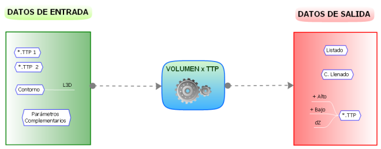
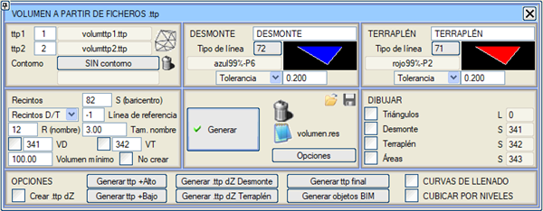
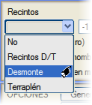
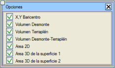
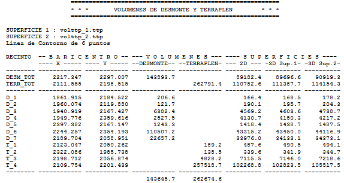
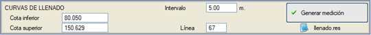
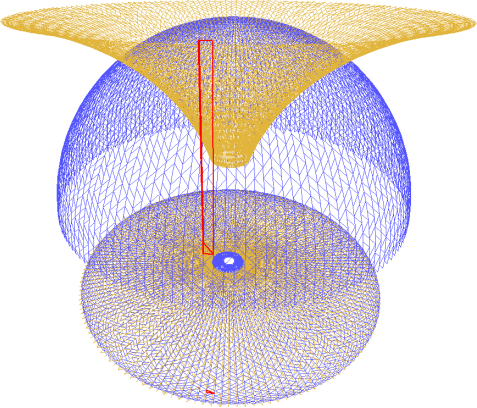
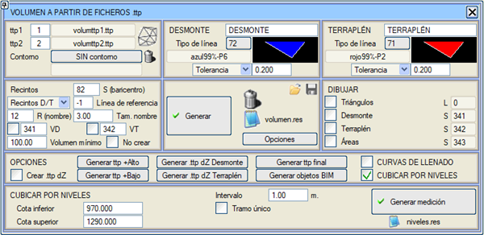

Bu menüden, isteğe bağlı olarak bir kontur çizgisi kullanarak, iki .ttp dosyası (noktaları ve ağları paylaşabilirler) arasındaki yarma ve dolgu hacimleri ölçülebilir. Eğer bu kontur çizgisi bildirilmezse, hacim hesaplaması .ttp'lerin paylaştığı tüm ortak alanda yapılır. Bu yarma ve dolgu alanları ayrı ayrı oluşturulur ve ölçülür, her bir alan için hacimler ve ağırlık merkezleri hesaplanır.
.ttp dosyaları,  butonu ile erişilebilen SAM Kontrolü listesinin indeksleri aracılığıyla bildirilir. butonu ile erişilebilen SAM Kontrolü listesinin indeksleri aracılığıyla bildirilir.


Yarma ve Dolgu bölümlerinde, her biri için farklı olan ve tolerans veya minimum yükseklik olarak kullanılabilecek bir parametre bulunur. Orijinal bir arazi (ttp1) ve nihai bir arazi (ttp2) için:
- Eğer bu parametre tolerans olarak kullanılırsa, nihai arazi malzeme tasarrufu için dolgu bölgelerinde o miktar kadar alçaltılır ve kazıdan tasarruf etmek için yarma bölgelerinde tanımlanan miktar kadar yükseltilir.
- Eğer bu parametre minimum yükseklik olarak kullanılırsa, araziler değiştirilmez, ancak sadece kırmızı kotun öngörülen değerleri aştığı bölgelerde dolgu veya yarma ölçülür.
Alanlar açılır menüsü, yarma alanlarını, dolgu alanlarını, her ikisini veya hiçbirini oluşturmak isteyip istemediğinizi seçmenizi sağlar. Kullanıcının herhangi bir türde alan oluşturulmasını seçmesi durumunda, her bir alan için kullanıcı tarafından belirtilen tip ve boyuttaki bir sembol ve adın yanı sıra, ağırlık merkezinin konumuna yerleştirilir, VD ve VT kutucukları işaretlenerek alanın altına hacmi de yazdırılır. Bu alanların her birinin hacim hesabı, bu ölçüm her bir alan için minimum hacimden büyükse, listede detaylandırılır.
Alanlar, yukarıda belirtilen tipteki çizgilerle oluşturulacaktır (varsayılan olarak yarma için 72 tipi (mavi dolgu) ve dolgu için 71 tipi (kırmızı dolgu) çizgi tipi kullanılır).
Her oluşturulan kontur için, belirtilen tipte bir referans çizgisi oluşturmak mümkündür. Bu çizgiler, her bir ağırlık merkezini her bir konturun başlangıç noktasına birleştirir, bu da ağırlık merkezinin alanın dışına düştüğü durumlarda her bir alanı ağırlık merkeziyle görsel olarak tanımlamayı sağladığı için çok kullanışlıdır.
Ayrıca, hacmi önceden belirlenmiş minimum hacimden daha düşük olan alanların oluşturulmasını önlemek de mümkündür.
ÇİZ bölümünden, üçgenlerin çizimi etkinleştirilebilir ve her biri için alanı ve katkıda bulunduğu yarma veya dolgu hacmi not edilebilir, ayrıca her alana yarma veya dolgu hacmi de yazdırılabilir.

Oluşturulan listede (volumen.res) varsayılan olarak aşağıdaki bilgiler sunulur:
- Toplam yarma ve dolgunun ağırlık merkezlerinin (X,Y) koordinatları.
- Yarma ve dolgu hacimleri. Bu ölçümler için kullanılan ad, alanları boyamak için kullanılan çizgi tiplerinin üstündeki alanda yer alan ad olacaktır.
- Yüzey 1 üzerindeki 3D yüzey ve yüzey 2 üzerindeki 3D yüzey.
[Seçenekler] butonu, kullanıcının [Metraj Oluştur] butonuna bastıktan sonra listelenecek ölçümleri seçebileceği bir iletişim kutusu açar.
Yapılandırmayı kaydetme/yükleme imkanı verilir:
- Yarma ve dolgu için adlar ve çizgi tipleri
- Yarma/Dolgu alanlarının hesaplanması ve gösterimi.
- Hacim-alan eğrileri için parametreler.
Bir yapılandırma kaydedildiğinde veya yüklendiğinde ya da Metraj Oluşturulduğunda, bir sonraki ISTRAM oturumunda iletişim kutusunun son kullanılan değerlerle başlatılmasını sağlayan bir ISPOL.vxt dosyası da kaydedilir.
Aşağıda bir örnek gösterilmektedir:

volumen.res listesi için YARMA ve DOLGU metraj metinleri değiştirilebilir.
Bu araç ayrıca aşağıdaki seçenekleri de sunar:
[+Yüksek SAM oluştur]
[+Alçak SAM oluştur]
|
Bu işlevler, ilgili iki yüzeyin en yüksek veya en alçak yüzeyini içeren bir .ttp oluşturmayı sağlar.
|
[dZ Yarma SAM'ı oluştur]
[dZ Dolgu SAM'ı oluştur]
|
Sırasıyla, Z'si iki yüzey arasındaki kot farkı olan üçgenlerle bir .ttp dosyası oluştururlar, ancak sadece yarma bölgesinde olanları veya sadece dolgu bölgesinde olanları kaydederler.
|
| .ttp'yi Kontrol Et |
Her dosya tamamen yüklendikten sonra tutarsızlıklar (kesişen ağlar,...) aramak için bir kontrol yapılmasını sağlar.
|
| Nihai .ttp oluştur | Bu araç, Yarma ve Dolgu için bir tolerans tanımladığımızda etkinleşir. SAM Kontrolü iletişim kutusunda da gösterilen VxT_ttp_final.ttp dosyası oluşturulur.
Bu dosya nihai araziyi içerir: yarma bölgelerinde önerilen arazi (ttp2) yarma toleransı kadar yükseltilmiş, dolgu bölgelerinde önerilen arazi (ttp2) dolgu toleransı kadar alçaltılmış, yarma ve dolgu toleransı arasında kalan bölgelerde ise orijinal arazi (ttp 1) boyunca devam eder. |
| dZ .ttp oluştur |
Noktaların kotunun, orijinal iki .ttp dosyası arasındaki kot farkı olduğu bir .ttp dosyası oluşturmayı sağlar. Bu dosya, örneğin bir izopak haritası oluşturmak için kullanılabilir (bu dosyaları TOPOGRAFYA'da yüklerken tekrar eden noktaları yükleme imkanını etkinleştirmek ve .ttp'nin kontrolünü devre dışı bırakmak tavsiye edilir).
|
HACİM-ALAN EĞRİLERİ
|
Kullanıcı tarafından tanımlanan iki kot ve bir aralık'a göre iki yüzey arasında hacim-alan eğrileri oluşturma imkanı sunar:

Hacim-alan eğrileri hesaplanırken, belirtilen tipe göre farklı dolum kotlarına sahip çizgiler de yüzeyler üzerine çizilecektir (bir -1 değeri çizilmemesine neden olur).
|

Seviyelere Göre Hacim Hesapla
İki kot arasında tek bir bölümü veya bir aralıkla iki kot arasında birkaç bölümü ölçme imkanı. Her bölümde yarma ve dolgu ölçümü, işgal edilen alanlar ve yarma ile dolgudaki ağırlık merkezi ile bir niveles.res listesi oluşturulur.

BIM Nesneleri Oluştur
Yeni BIM Nesneleri Oluştur işlevine basıldığında, hacim hesaplamasının sonuç nesneleri (Yarma ve Dolgu), bu modüle özgü bir klasör altında BIM ağacına geçer. Hacim, 2D Yüzey Alanı, Üst 3D Yüzey Alanı, Alt 3D Yüzey Alanı ve Ağırlık Merkezi koordinatları özniteliklerini alırlar. Aşağıdaki resimde, BIM nesnelerinin bir görüntüleyicisini entegre eden SAM'a Göre Hacim menüsü gösterilmektedir.
Kontur Kullanımı
Hacim hesaplamasını yapacağımız kapalı bir poliline (kontur) seçebiliriz. Bu, KONTURSUZ'a tıklayarak ve ekranda polilineyi seçerek yapılır. Ayrıca, konturumuz herhangi bir *.edm/*.edb dosyasında kayıtlıysa, konturu seçtikten sonra onu açmamıza olanak tanır, bu da dosya adının volumen.res listesinde görünmesini sağlar.
|